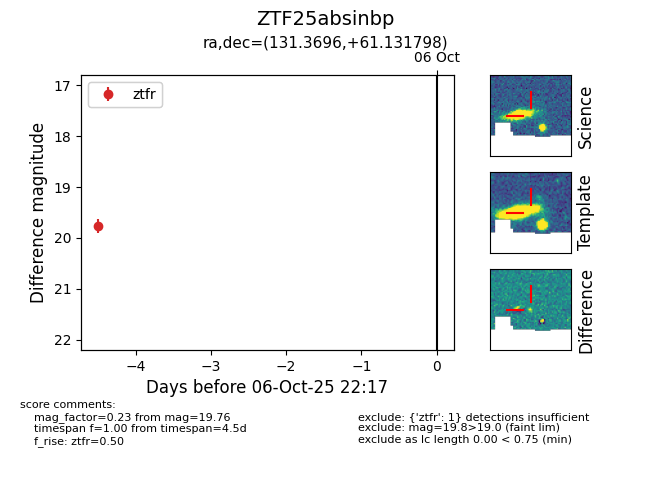

FINK: ZTF25absinbp
Lasair: ZTF25absinbp
ALeRCE: ZTF25absinbp
ZTF25absinbp (ztf,fink)
equatorial (ra, dec) = (131.3696,+61.13180)
galactic (l, b) = (155.1083,+37.18667)

last ztfr=19.76
1 ztfr detections